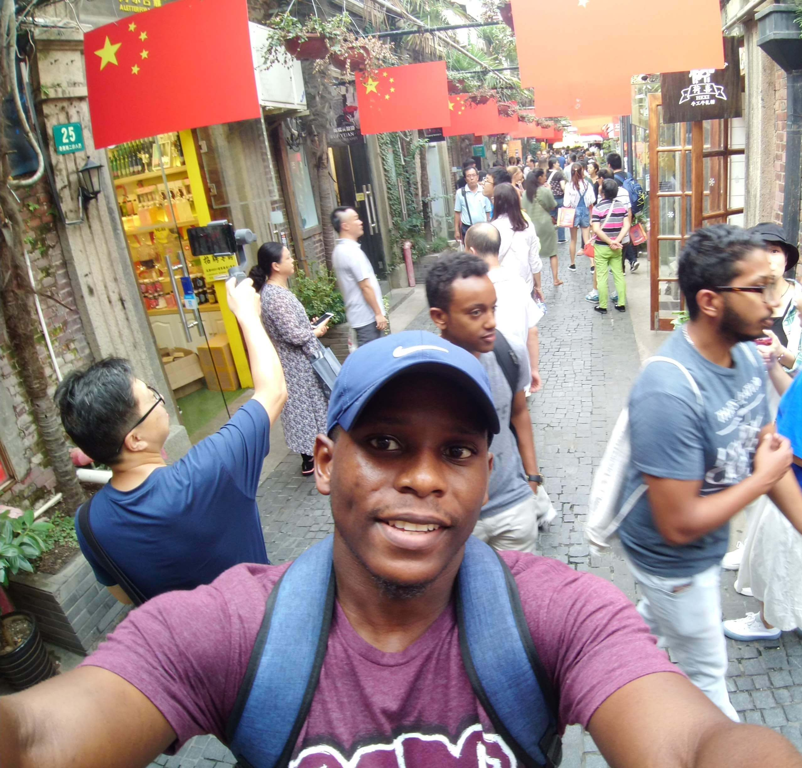

Make the complex understandable.
I connect business goals, user needs, and technical realities into a product direction teams can act on.
Product strategy · Discovery · Roadmaps · PrioritizationI turn ambitious ideas, technical constraints, and user problems into products that work — and outcomes that matter.

I connect business goals, user needs, and technical realities into a product direction teams can act on.
Product strategy · Discovery · Roadmaps · PrioritizationFrom ambiguous requirements to releases, I work with engineers, designers, and stakeholders to remove friction and ship reliably.
Agile delivery · APIs · SaaS · Payments · PlatformsI care about whether a product is useful, adopted, and trustworthy — not just whether the backlog is empty.
Product analytics · Quality · Experiments · Continuous improvementChallenges I've worked on — spanning ticketing, AI SaaS, security, and tools for product teams.
Connecting ticketing, creator operations, checkout, and discovery into one event experience.
Delivering AI-powered customer-success workflows and integrations.
Trust is a product feature.
Marketplace and verification experiences for the smart-contract security ecosystem.
A product-management workspace connecting Jira, decisions, journeys, and change intelligence.
Different industries. Same approach: find the signal, make the trade-off, deliver the value.
A background combining product leadership, hands-on development, and financial systems thinking.
Technical Product Manager / Project Manager
Senior Product Manager
Product Manager
Product Manager
Development & technical delivery · Shanghai
MSc Financial Computing · BSc Accounting. A foundation for connecting technology, business, and financial products.
PSPO II · SAFe Product Owner / Product Manager · Google Generative AI Leader · Google Cloud Digital Leader.
I'm Daniel, a Technical Product Manager based in Cologne. I've worked across development, financial computing, blockchain security, AI SaaS, and consumer platforms.
What ties it all together is my interest in how systems work — and how to make them work better for people. I like being close to the details without losing the bigger picture.
Outside the day job, I build tools like Product Puzzle to explore how AI can make product teams more effective.
Explore my GitHub ↗Have a product problem worth solving?